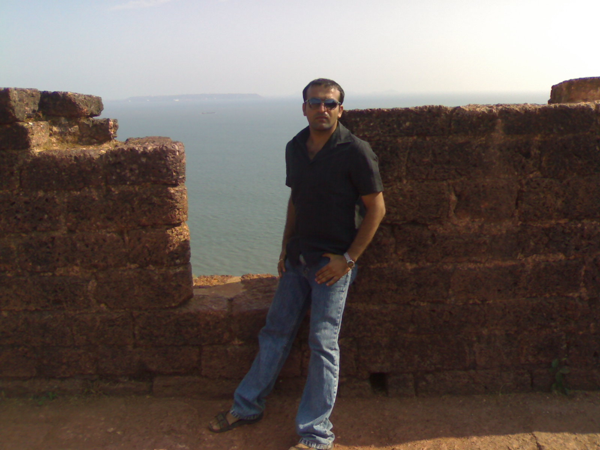
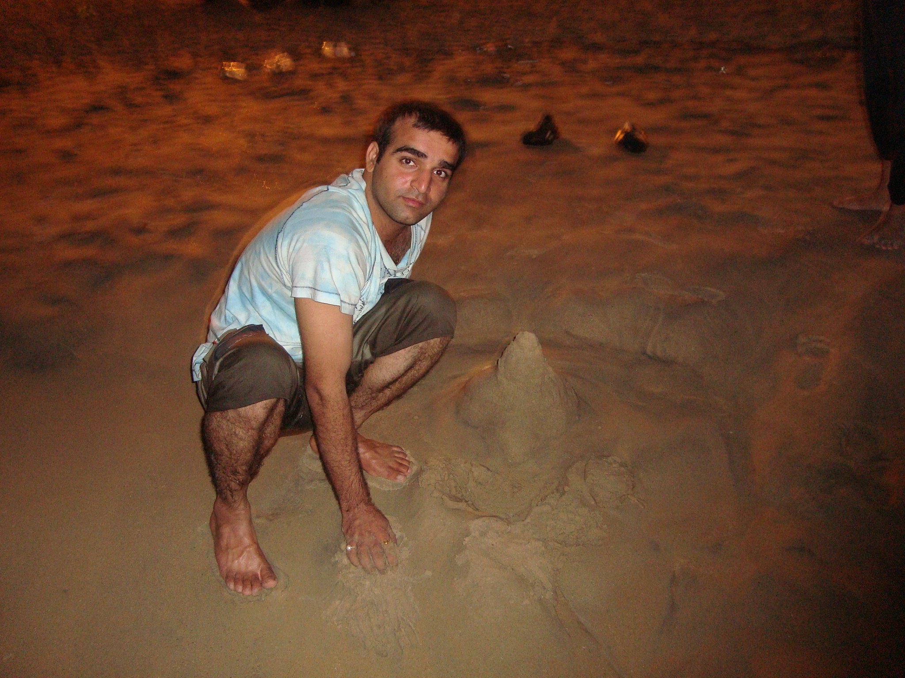

The Yearbook - Commemorating 2005-09!
Ojasvi Rajpal's profile information
Name - Ojasvi RajpalBirthday - 13th April 1986
Email - ojasvi@students.iiit.ac.in, ojasvi.rajpal@gmail.com
Address - Ojasvi Art press , Adarsh nager , Near double phatak hissar Haryana -125001
Phone - 9989271646
Webpage - Link
Hobbies - Anime , Computer gaming , puzzles, physics, physically strenous activites.
WishList - To witness a miracle ;)
Memorabilia - first year age battles , felicity 08/09 , goa Trip , Summers 08/07
What would you want to be remembered as - Dark-knight
Future Plans - Phd in Physics
Testimonials written by Ojasvi Rajpal
Ojasvi Rajpal's Album

{kind=link}
Default caption

{kind=link}
Default caption
Testimonials
Abhinav Parashar wrote-Ojas ...a real nice guy . In the beginning of college, I had an impression that he is an attitude showing guy. But when I came in touch with him, I realized he is one of most friendly, sincere, fun loving, childish and mature guy. His looks and his nature is quite opposite. Bat bat me senti ho jata hai or physics lagane lagta hai, so most of the becomes a victim when he is in our group . He is totally gaming freak. Whenever I went to his room, most of the time I found him playing EOA, CZ n... blah blah . A regular gymer and also Sincere for studies.. (sometimes not) . He is also a literature lover hv written so many nice poems, which u can find him on his blog .
Goa trip with him was really awesome. So many memories of Goa are still fresh in my mind. Hope we'll have many more in coming future. He is a Dad's boy . Quite sentimental for his parents, hv so many dreams for them. I wish ur all dreams come true very soon. All the best for ur future.

Kiran Danduprolu wrote-
[Part 3 of 3]
Dont worry we can continue our gaming spree on weekends on XBox Live or I would come over to your house for the same. Now that you are in Microsoft I bet you could get game titles for much cheaper price than in Market. Hoping to try out WWE, Tekken, Street Fighter, DC vs Mortal Kombat, Gears of War, and other co-op and multiplayer game with you in future.
I really appreciate and thank you for your offer on sharing a house with you. All the best for you future @ Microsoft and I know we will be in contact for years to come.
Signing off ... Kiran Danduprolu
Kiran Danduprolu wrote-
[Part 2 of 3]
Timeline of Games we have played together:
1)AOE --- 2nd year along with Sachin, Somani, Kulbir and others
2)CS --- 2nd,3rd and 4th year along with Many batchmates
3)Marvel Trading Card Game --- 3rd Year --- One of the most awesome gaming experiences that I have ever had -- there was nothing much to do but The strategies, teams, decks .... ah I miss this game a lot.
4)Civilization IV --- 3rd Year --- I knew this was the best Strategy game ever and Ojasvi gave it a shot and guess what he agreed with me and he was addicted to it too. Then we started playing this in multiplayer mode too against Computer. It was also fun as I used to concentrate on development while Ojasvi showed his commandereal skills in trying to attack the Comp.
5)Titan Quest --- The Diablo Style game which I initially disliked caught Ojasvis interest and he asked me if I would play it with him and I agreed with very small hope but multiplayer in Titan Quest made my opinion change on the game and we completed the game together in multiplayer mode.
6)Diablo II --- Completed Diablo II in multiplayer mode along with him in 4th year almost 1 week back
 .
.
7)World of Warcraft --- I was a WOW addict back in 3rd year and asked Ojasvi to join as it was a MMORPG and it was the only opportunity in college we would get to try MMORPG. Ojasvi too liked the game but was quick to realise that it was damn addictive and tried to avoid the game and only played it when I was with him.
8)Warcraft III Dota
and many more small games including pocket tanks.
Kiran Danduprolu wrote-
Ojasvi is one of the most special friends I have ever had. I dont remember when we first met in IIIT and how ever friendship began but I really thank God for having sent Ojasvi to IIIT with me. Whenever I and Ojasvi come together other friends start running away as they know we will talk about Games,Games and Games and there will be no scope for BC around. Ojasvi is dedicated and feels responsible and hence manages his time to have a balance between gaming, tv shows, studies etc. He does all his work on weekdays and does full Gaming on weekends. Ojasvi is one of the few lucky ones who has been placed in Microsoft this year and I bet he will climb the ladders there much quicker than others do.
I and He have together played numerous PC games multiplayer on LAN ... I bet none would have even heard of these games. We share common gaming interests and thats why we get along so quickly in multiplayer.
Yogesh Prakash Nautiyal wrote-
When I met him for the first time, I was like - wow, whoz that guy with such a stange but friendly accent. Laughing and talking both at the same time. From the very first instant I began to like this person. I rem our first talk revolved around my AIEEE rank. Actually he was kind of searching thos guys who were top ranker in IIIT. So we met...and this guy poured all the metaphors of appreciation in my legacy ..bond, phodu, genious, newton ..so on
 . Well thats Ojas for you...He lend his whole heart out for you.
. Well thats Ojas for you...He lend his whole heart out for you.
In first year I knew him as a guy who is a game freak..and want to play all available games. We were in diff section and hostel, so I was not opportune enough to have spent much time with him quite often. But whateva few chatting sessions we had were very interesting. Quite often our talks involved with life around, to our hometown and family. And he was the person with so much of experience.
He is one of the few person at IIIT whom I admire most. I admire him for his self-belief, attitude. He had clearly set out goals with which he landed in IIIT. Doing good at study and getting a handsome package is okay, but to chill, and live this college life was also his priority. And he indeed accomplished the set out things. Got his dream job in Microsoft. Besides he added all the possible spices in this college life. So passionately hit the gym, has lost the oodles of weight and has grown into a hunk. I don't know much about his girlfriends but I am sure there must be many wooing around him. In college itself he is so famous among batchmates, and juniors too.
I enjoyed the trip with you in Goa...and in future also I will be looking fwd to such trips. And dude I know you will rock where ever u go. All the very best for your future.
I will certainly miss you..but being cities apart I dont think there will be distances between our heart. *Friends Forever*
Manish Arora wrote-
Ojasvi aka Dark_knight
Apna hisari bhai hai ye to. I met this guy in my 12th class Physics batch when he was a dropper and freshers' and droppers' batches got merged. That time all of the freshers including me used to call him bhaiya "Ojasvi bhaiya" .... sounds a bit awkward now
. But I must tell you that this guy is a genuine bond in physics. Alag hi level par sochta hai banda. Har cheez mein physics lagane ki koshish karta hai. He is very intelligent and his MS intern and PPO are a testimony to this fact. Gamer to the core. Life ke fundo ke baare mein bahut sochta hai. Jeevan vidya achchi lagti hai bande ko. Chuttiyon mein isliye ghar nahi jata taki jeevan-vidya kar sake . Keep rocking dude. All the best for all your future endeavours.
Cheers
Manish
Atul Dwivedi wrote-
Ojas mera currently padosi hai .. ..banda gamers hai ..AOE mein jab bhi hum log sath rahe hai...opponent ko maat di hai ..kudos to partner
Ab baat ye hai ki banda hasmukh hai..kabhi kabhi fatte thode jyada maar deta hai..well dude ..just chill out and follow your heart
MS mein job lagi hai to fodu hoga hi..
Padhai mein pahle se accha tha ...Class mein doubt bahut poochta tha ..jo mere aajtak samajh mein nahi aya ..pata nahi prof ko kaise samajh mein aa jata tha ..
Banda hard working hai ..iska room bilkul mere room jaisa ganda rahta hai...thoda alasi kisam ka hai ..bilkul meri tarah
Ab banda intelligent hai...lekin soch soch ke ganja ho ja raha hai .. mere bhi koi jyada baal nahi hai yaar

Ab kya likhun kuch dimaag mein aa nahi raha .. gaane ka bande ko bahut sauk hai... specially english songs ...lekin jaise hi gata hai ..lagta hai ..ki ab kya hi kahein ..
..but banda gaane se kabhi nahi chukta ..that's the spirit man .. .!!
CS & AOE dono mein bond ki tarah khelta hai....DAndu ke baad yahi banda hai .. jo sabse jyada gaming karta hai...mast

Coding iski starting se hi mast thi .... !!
Iske sath serious discussion karne mein jyada majaa hai...sahi suggestoin deta hai ...!!
Bas enjoy ..and have fun ..
Ankush Kalkote wrote-
Ojas is one of the best gamers of IIIT
.He has played almost all games that are available here. You take name of any game - wow, fear, battlefield, ceaser, gta, nfs, age, cz, tekken, Call of duty, Unreal Tournament....he has played them all and he is really good at them. He hasn't even left any flash games unplayed. 
Aur aisa nahi hai ki bas games hi khelta raha...Acads me bhi piche nahi hai...Microsoft ki dream offer hai bande ke paas
... Bahot intelligent hai... Has got really sharp mind... One of the best brains around
Jab main isse pehli baar mila tha tab meri isse banati nahi thi...Bahot jyada irritate karta tha
 . Pehle to GHEB me rehta tha lekin most of the time cellar me bc karne aa jata tha. Baad me phir nbh me shift ho gaya aur phir to hum neighbours ban gaye. Waise banda nature se bahot acha hai ...he is innocent and childish
. Pehle to GHEB me rehta tha lekin most of the time cellar me bc karne aa jata tha. Baad me phir nbh me shift ho gaya aur phir to hum neighbours ban gaye. Waise banda nature se bahot acha hai ...he is innocent and childish  ...Bachowali harkate bahot jyada karta hai... Bahot senti hota hai... Has great interest in philosophy and physics
...Bachowali harkate bahot jyada karta hai... Bahot senti hota hai... Has great interest in philosophy and physics
Ab iski unique quality - Kaphi jyada high level ke phatte maarta hai
 ...kabhi kabhi itna scientific ho jyada hai unme bhi...aur phir explain bhi karta hai...
...kabhi kabhi itna scientific ho jyada hai unme bhi...aur phir explain bhi karta hai... 
Lekin isse sabsi badi shikaayat ye hai - Har semester mein ek subject mein to 'Fakka' aayega isliye hamesha rota hai...Aur generally aise subjects me iska 'A' ya 'A-' aa jaata hai....Abhi is sem me bhi bol raha ki Venki ki project 'F' aayega
...Mai hasoon ya royun samajh me nahi aata  ...Koi aise kaise ro sakte hai yaar... Aise waqt pe isko sirf iska room partner hi sambhal sakta hai - Chacha
...Koi aise kaise ro sakte hai yaar... Aise waqt pe isko sirf iska room partner hi sambhal sakta hai - Chacha  ... Inki jodi to bhai legendary thi
... Inki jodi to bhai legendary thi
Waise sab log isse sambhal ke rehte hai...Kya bharwasa bhai... Isse jab josh chadhta to apni strength prove karne ke liye koi banda chahiye... Ab ojasvi se kaun ladhega (Paagal hai kya koi
)... Aur iske saamne koi cheez padi mil jaaye, phir uska koi bharwasa nahi . Mostly tod dega ya kharab kar dega...Hamein kaphi sambhal ke rehna padta hai iske saamne
Ankush Kalkote wrote-
Part II
Waise to ye humse baat karta hai to normal hi rehta hai...lekin jab kisi prof se baat karta hai to phir wo kisi ko samajh me nahi aati
... Bechare profs ko badi mehnat karni padti hai samajhne ke liye ... Aur ye aur mridul jab mil jaaye phir to bhai kya accent hoti hai inki... Kisi ko pata bhi nahi chalega ki English bol rahe hai  . But the good thing about him is - Kabhi bura nahi maanta kitna bhi majaak udayo tabhi bhi ...
. But the good thing about him is - Kabhi bura nahi maanta kitna bhi majaak udayo tabhi bhi ...
Isko raaste koi bhi yaad nahi rehte... Agar isko Mehdipattanam akela chhod do to ye IIIT bhi waapas nahi aa sakta...
He does some crazy things.....Dilbert comics ki 800 strips ek din me padhi hai is bande ne
 ...Isko cartoons aur animated series me bahot interest hai... Aur phir un heroes ki acting karta rahega dinbhar... And he is very pround and happy about that...
...Isko cartoons aur animated series me bahot interest hai... Aur phir un heroes ki acting karta rahega dinbhar... And he is very pround and happy about that...
He is obsessive about body building and exercise... His inspiration is Rocky...
Waise aaj kal hamare group ke saath jyada nahi rehta is liye hum isko Alien kehke chidate hai... Lekin ab isko Alien keh do to khush ho jaata hai
Wish you all the best for your future, yaar
. Lekin humein mat bhool jaana bhai kuch saalo ke baad.... Atleast testi padhke to yaad aa jayega ki- mai tera dost hoon
Will miss you 4 : Your childish nature, games
Character I relate to u : Sheldon from TBBT
Abhishek Sainani wrote-
The first thing I learned about him was that he knew karate before I learnt his name!
He is passionate about physics with quantumness in it, and the only person with whom I like to talk about bringing innovation in superhero industry, although our talks haven't reached any conclusion.
We do discuss our poems with each other sometimes, and sometimes talk about Anime and I watched some suggested by him and they were good.
He is passionate about gaming and can spend hours continuously shooting terrorists or managing a civilization and waging a war.
He's a BIG fan of Howard Roark and likes to keep himself physically fit.
I remember once we were discussing about martial arts and I said that I can not handle pain so I didn't learn martial arts till now, on which he told me what one feels on the first impact of a fist, that everything else feels insignificant, one feels numb and eyes start watering etc.
On another occasion, I said that if one knows martial arts, one can fight off anyone, on which he said that if you see a man with a gun, run away, martial arts won't work against a gun, must say I had to agree.
I tried to propose new superheroes to him, but he said such superheroes already existed.
We discussed about time travel, teleportation but since I have hardly read anything about them, so he could, based on his knowledge convince me
that I wasn't right or wasn't precise enough!
For some unknown reason we started interacting quite frequently after coming to OBH, i.e., in
4th year.
What I would like to take from him is his attitude.
All the best for future, I'm sure it'd be much better, although not the same as these college days!
Randeep Singh Banga wrote-
Some random facts about Ojasvi:
used 2 b d favourite junior of all in 1st year...
he loves old melodious romantic songs....he has made me listen to many of dos forcibly
can't comprehend how he and kulbir manage to live in a room 4 2 years....dis could hav happened only by God's grace
still remember him telling his name manifolds to Zulu sir and sir being unable to decipher his encrypted accent....he like a 10 year child told him, "Sir, he u can
call me sunny
"...
he and me make a perfect shopping pair....all others r way behind us
his crushes include many mottis and chhotis....thr was a time whn four S's were after him.
does work he is interested in...seldom does he work but whn he does puts in more thn 100%
His favourite place to think is POT
gets sentimental very quickly
....make sure people don't use u for dis...
people call him Alien...i hv sympATHY wid him as dis has started happening to me too...
loves his family...has sacrificed a lot 4 thr happiness...don worry...God will bless u 4 all dis.
Will miss u 4: yaar hune kithe siapa latha hai
Most Memorable moment: doodh ki kahani b/w u and Kulbir, d day whn i gave u d news of recruitment in M$
Message 4 u: Be d same innocent guy u r...
Song 4 u: Rocky theme song
Randeep Singh Banga wrote-
bahut chatting karta hai...bahut bechariyon ko senti kar rakha hai isne....aur kamaal ki baat ye hai ki all bechaaris r friends among demselves....beta pitega ek din tu..bach le....aur to aur M$ mein apni admin ko bhi pata liya though she was married
baal ki bahut tension hai ise...baal ka ek kissa hai....once he went to some Dr. Manoj for consulting about his hairfall...he came back and told us...kya doctor tha...kya bada TV lga tha wahan...kya receptionst thi...kya sofe the...kya interiors the...doctor bhi laptop pe kuch kuch kar raha tha...then all of us laughed and said....."Doctor ne tera kaat diya....apni aish ke paise tujhse le liye...or dawaii bhi laptop se dekh kar prescribe ki"....he laughed along wid us.
u can easily find him in his room in unique postures. His legs would be vertical along d wall, with his back lying on d floor, a laptop in his lap and he would be playing a game
His lappy would be on d floor, he would be on d bed facing d floor, and his legs along d wall 
I specially njoyed d time wid him in M$. We together played pool 4 hours...he used to make funny angles wid d stick, and always tried unreal shots tht he had seen professionals play, but never did he succeed
I can recall time whn we were together at d time of foozeball, mazaa, tea snacks, pastries. He also helped me wid ideas 4 my intern project. It was gr8 fun in his company...I am glad we will still work in d same company.
I call him 'Habshi' for his huge body and his animal characteristics
. There was a cat Ranjeet Singh had kept in his room. It was a calm, sleepy, obedient one. Then the cat was left in Ojasvi's room for a couple of days and it became wild, restless and even had bitten Ojasvi. I doubt Ojas what did u do wid tht cat But indeed u made tht cat a real CAT.
Once we had a heated argument. And it was soon when both of us met on our way to each other's room and said sorry to each other simultaneously. After that we laughed for a while and hugged each other. We have a unique chemistry b/w us.

Randeep Singh Banga wrote-
Ojasvi Rajpal: A very unique person, very sweet, very innocent, handsome, has a gr8 physique, has a brilliant brain, very innovative, very helpful, loves to be wid himself, childish, very lazy, wayward at times,
When he came to IIIT, he had a stupid resolution to make seniors happy and what not did he do to accomplish tht. In d course of it, i had started considering him lowly. But it was not his natural self. And he changed back to what he is, and that is what I respect him for.
He has a very poor memory. I still doubt if he can go to Mehdipatnam all by himself. After being wid me for 4 years, it astonishes me when he calls me
'Parminder'. There is an incident from our 1st days in d college. We were standing in a queue in mess and Nikhil Walecha was standing in front of him eating Lays. Though not asked, he took chips from him assuming him to be 1 of our batchmates
He's a gaming freak..plys all kinds of games...he can paly ne game 4 days in a stetch w/o getting bored....sigh..sigh....4m mario and contra...to browser games...from foolish flash games to solaitaire...till age, CZ...he is a master at all des...it shows his lightening speed of mind....reads a lot of comics rather all of dem...loves Calvin (my gfavorite too)....reads very fast....by d time u reach only 1/4th of a page, he would hv read d whole of it....fan of DBZ and all d existent comic characters and animations, loves rocky (his inspiration for building a physique), , 4S...plz make sure people don't misuse u....his crushes...all motis and chhotis...
njoys every moment of life...its special whn u come out of a theatre having watched an ordinary movie and Ojasvi will just jump up and down saying it is d best movie i've ever seen....and he makes u believe him giving all d stupid reasons....and dis happens always
....he really is innocent..
contd...
Karan wrote-
On the first day of college, we had a professor's (I think Jawahar) class. Jaws asked the class for volunteers for a make shift CR, for the elections had not been held back then. For all everyone may speak, there was just one hand which went up.. Ojasvi Rajpal. For most of us, this was the first introduction to this chap. Flash forward to an year later when he told us, "I stepped back, or Daddu was a goner".
But yes, he did enjoy a lot of popularity in the batch back then
For reasons best known to him, hes never been active from that time on. I guess priorities change in life, and yes, his focus was more on acads later on. Point proved by the Microsoft PPO.
. But yes, I still crave to see a retake of the Vayu act on freshers . How fast have those days passed! :sigh:
I think he is still a bit of a kid lost in his own dreamy world
Enjoyed all the BC with him in cellar.
May God bless!
Fav memory: When he became the CR.
Message for him: Speak clearly
Peace.
Sunil Soni wrote-
Jasvi - very good at making new friends ... very quick ... very socialized n gotta huge network everywhere
...also first guy 2 b placed in recession ....
this guy has got really very coooooooool attitude ... first time i spoke to him ... i thought he was speaking some foreign language
.. nothin offensive ... pure fun ....
but then it was really very difficult to get me what he was saying ... i was feeling embarrassed each time to make him embarrassed ... so for sometime i used to say just hi n bye
a very coool n committed towards things n simple guy ... keep rocking always dude ...
Alok Kumar Gautam wrote-
par kabhi kabhi fatte bhi bahut marta hai..
.... is extovert and kisi ke saath bhi bahut jaldi friendship kar leta hai... ... as a whole banda bindaas hai...iski ek problem hai ki ise kucch yaad nahin rahta..first year mein hamesha bange ko Ranjeet and nitin gupta ko nitin bansal bulata tha.... to bhai though we are placed in different cities, but aap mera naam na bhool jana..warna .. bahut jor ke laatein padengi.... samajh hi rahe ho kahan par...
Most Memorable Moments Our First year outings and BC sessions and Goa Trip
Mess For You Itna senti mat hua kar...thodi philosophy kam kar
.. aur jyada physics pe dhyaan na diya kar
Alok Kumar Gautam wrote-
Ojasvi.. the senti and hu du du du
guy... used to be one of my best friends here in IIIT.. Aajkal yeh hamare saath jyada nahin rahta to thodi dooriyan badh gayeen hein. but still... we are very good friends... This person is a real bond ..be it acads..or games or girls... socialises very easily...and is never short of words... loves making ppl around him smile... .. and this is what i have learned frm him ...always ready to help others... In the first few days here in IIIT.. I used to hate him... mujhe lagta tha ki yeh ek bigdi hui aulad hai..but as we came closer..thanx to Kabeer and Sachin...he became very good friend of mine..
I still rem da day in first sem.when we wr going out and me and pankaj did not want Ojasvi to come with us.. but Kabeera and KK insisted and finally he came...and frm dat day our friendship
started.. ITWS III mein sara project isi ne kiya tha... so
...In the first few sems..me, ojas and sachin had a gr8 time..BCing wid each other..but then smthing happened and ojasvi lala hamse door chale gaye....may be ki apan apne group mein khinchai bahut jyada karte hein..and he dint like it..whtever be the reason...we are still good friends...its just that we dont BC often...he is a very good person..good at heart...smtimes..acts maturely.. and at time... so kiddish...in fact he is a kid at his heart...loves his parents and lil sister a lot... .... we alyawz shared a lot of things and still do...jab inhein time milta hai to... ... bande ke saath bas ek hi problem hai... baat baat par senti ho jata hai...aur philosophy chalu kar deta hai...bhai itna senti na hoya kare... iska physcis mein bahut interest hai...iska bas chal raha hota to yeh kahin physics mein Ph.D kar raha hota... .. Goa trip tere saath awesome thi bhai... beach pe who "Truth n Dare" khelna and ...and your that story made me senti man... easily believes everybody ...to bhai thoda dhyaan rakhna.....bande ka sense of humour to badhiya hai
Cont
Arun M.S.C wrote-
we've have been partners in quantum physics .. he has good knowledge in physics and hope u complete phd in phsics.. keep ur dedication towards gym..
all the best for future..
Pankaj Saini wrote-
if people are having a laugh about certain phenomenon... he will come with a ready explanation.. and go on to describe the physics behind it.. it becomes so irritating that he ends up spoiling the fun of it
He's such a pathetic memory when it comes to recognizing routes and peoples' names.. I still remember when we used to give a '90 degrees' salutation to our seniors.. but this incident happened towards the end of 1st semester.. and ojasvi and I had got to know each other quite well..... but one day he is coming from the opposite direction.. and as soon as he approaches me... he bows and makes a complete 90 degrees to me... taking me to be some senior
we hardly let him go alone to any place... and when he goes home there are always some people to accompany him ...
yeh sab kuch isko dhyaan nahi rahta but he remembers all the stupid facts for sure.... for in every discussion he brings forth an established fact about the things under consideration.. and everyone gets pissed off ...
dude... no one gives a damn to facts and proven statements if fun ceases to exist at the very mention of them
Enough on pulling legs... shud appreciate him for he deserves some
He's a highly philosophical being... believes in meditation.. inner strength.. and all that stuff
He's good in academics .. he started working hard from the 2nd year onwards.. and truly deserved the PPO that he got in MS
will miss you forfor all your random bakar.. your getting excited over nothing... saying things that goes whoosh over our minds..
advice plz be more clear when you speak
.. rest all you can handle well.... there are so many advices to be given to you though but I think I've mentioned them already
Have a successful life !!
Pankaj Saini wrote-
Lets shatter certain myths today.. for people always say.. he's a true haryanvi and blah blah.. and wanted him to carry on a certain legacy .... but he knows about haryana as much as any guy from kerala would
If you tell him that the grant trunk road passes through haryana but not hisar... he will start to argue (not just argue.. actually threaten) that it is not so... and that he had spent all his childhood .. riding his bicycle on the G.T.Road
Another thing.. the qualities he shows and has (there is a difference
) .. are more of a person who has spend years meditating in the deep himalayas.. so is he a haryanvi?? NO ... mera naam bhi badnaam kar diya...
But all that apart... Ojasvi is a really really really great person at heart
or I should say kid at heart ..
Spends most of his time.. fantasizing and living those fantasies
..
He's all about Dragon Ball Z... and all such other cartoons...
He's played almost all the games that exist on our LAN...
He's even played all the 2D games of suse or ubuntu
He's read so many comic stips and pdfs..
He reads books like 'train your brain' 'know thyself' 'know your hidden strength' 'you are not stupid' and more such crappy stuff
While in a discussion you never know when his mood will switch from being 'funny' to being 'extra serious' or 'senti' ...
He doesn't get it that most of the times people are saying things just for the fun of it... but NOOO .. he's to prove that he's to be morally right.. and say the things which are usually opposed to what people are ready to hear or entertain... I don't know why.. but he thinks he has to apply logic in every thing that's being talked about... continued..
Sachin wrote-
Ojasvi or dark-knight(as he like himself to be called) is probably the one with whom I shared everything, discuss everything about me and probably one of my best friend around.By Looking at this tall, strong ,bald guy
, first impression you will get is that he is rough and tough kind of guy, never cares about anything, Jo mann mein aata hoga karta hoga and all that. But the minute you got to know you will know that he is totally opposite of what he looks.He is soft, polite, intelligent and have an attitude to do anything. Has a heart like kid simple and straight.
I met him first at Pankaj's rum. He was extra friendly for a person meeting first time.I first thought this guy is strange
but then while playing TT that time we bonded. From then on I think we used to hang-out most of the time. He used to live in GHEB but often comes to cellar for BC and masti. We used to discuss the C-assignments and usually spends most of the time in lab watching movies or something. In labs also we used to sit side-by-side, complete our task at the earliest and den starts our BC there also. He thought me most of the games which I play today. Playing AOE in workspace was real fun. Playing all night and after breakfast sleeping for the day (ofcourse missing all classes ). Whenever he plays any game or found anything new he come to our room and literally forces us to try/play this things . He sits with you teach you how to play and later plays with you to defeat you . He has very bad memory with names and places .
Continued....
Sachin wrote-
After 2 years ,he used to call Banga , Ranjeet and he remembered that I am from Vizag
. Whenever we take bus for going anywhere he is the person we looked if he is on board or not because if we If you leave somewhere he can't come home (Proof: Mehndipatnam Incident where u start walking in other direction ). When he shifted to cellar, he used to be in our room most of the time (frustrated from loud punjabi music ). We didn't used to spend much time since 3rd year (compared to first two yrs) but we always have some quality time spent for the BC and gaming .In 4th year we played many games of monopoly and AOE. He plays monopoly with a strategy and lures with many offers which you regret later.
Coming to skills,He knows karate(as he told us
), sings well, good in argument (difficult to argue with him) and acts pro in leg pulling sometimes .Its hard to get things accepted from him once he rejected that. Highly philosphical at times . Used to shout all the time in discussion forum of first sem. About girls, he is very soft and considers all girls equally beautiful and charming . His ideas about girls is very different. Like GKB he is not liked by everyone but he certainly is liked by bunch of girls . Coming to acads, he is not hard-working but smart-working . He knows that he want to achieve something big and works for dat.He never prepared for MS like others have done but still managed to clear the interview.For us your selection in MS is boon. In summer'08 whenever we were bored, we used to call him and within 10 mts he was there waiting for us in MS gate. We used to play that beach-volleyball ,billiards,foosball etc. for like 2-3 hrs. It was cool and very enjoyable. Congrats for converting that to full time .
continued...
Sachin wrote-
In movies, I guess we have very similar taste. Although there are exceptions(I still think Rocky is Just OK
). We have watched many movies together. Whenever you are watching a movie with him, he suddenly pause the movie and start explaining you the things as if you were sleeping throughout the movie .Fan of all those animes and animated movies. Die-hard fan of "Batman" and "Rocky". He reads batman's comics, watched all serials =, movies of batman series(both animated and otherwise). When comes to comics he is also fan of Dhruv. and he still reads the PDF version of all the Raj comics (Nagaraj, Doga etc.). I think he is the one with which I played computer games in the LAN frequently for all the four years. From AOE to CZ now-a-dayz. Some games will be remembered always.He always listens to you without judging you and gives you his opinion . This is the reason,Whenever I feel like talking or needs a boostup I go to his room. He always cheers you up with the his happy attitude and chillax you from everything. Thanks for keep doing that
I wish all the best for your future in MS and hope you will find a way to pursue your lifelong goal of achieving Phd in physics which you were crying for since 1st year. Be in touch always. Will miss you surely
Will Miss U for :- Your childish activities, Long discussions , Computer Games.
Most Memorable moment : - V for vedentta outing, Walk while raining that night, playing Monopolies, MS outing and many more.
Msg for U: - Think practical all the time and don't eat your words
Song for U:- Pappu can't dance saala